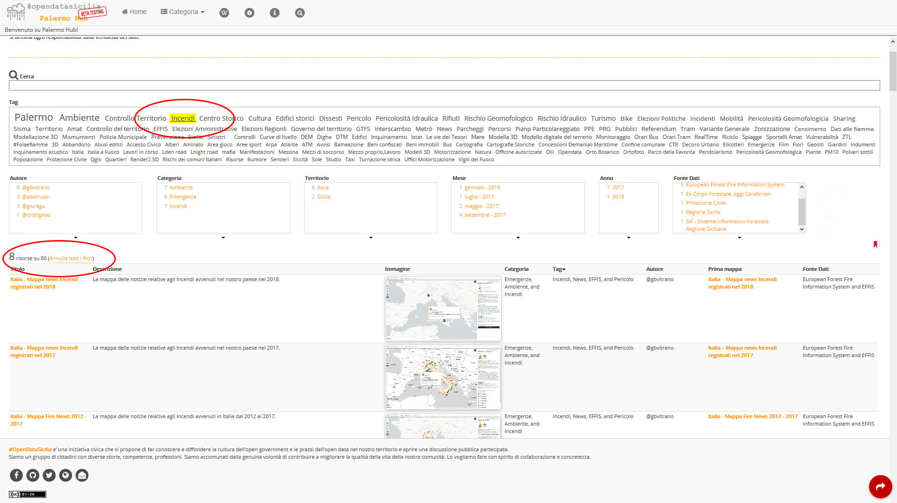

PalermoHub oltre ad essere un catalogo è anche il contenitore delle mappe, un unico luogo fisico con funzionalità avanzate di ricerca e filtraggio del testo che rende facile ed intuitiva la ricerca da parte dei visitatori.
Come trovare una mappa?
Una mappa può essere trovata tramite le funzioni di ricerca messe a disposizione da Simile exhibit, il classico form Cerca, Tag
o per i vari Argomenti.
Subito in basso un semplice esempio della funzione cerca, digitando una parola o frase all'interno del form Cerca, verrà restituita il risultato della ricerca di tutte le mappe che al loro interno contengono la parola cercata.
Esempio di ricerca con filtro per Tag , è sufficiente selezionre uno dei tanti Tag all'interno del form Tag e subito in basso verrà restituito il risultato della ricerca.

Esempio di ricerca con filtro per Argomenti , è sufficiente selezionre uno o più Argomenti in caso di una ricerca multipla e subito in basso verrà restituito il risultato della ricerca.
Il medoto di ricerca per Tag e Argomenti può essere applicato conteporaneamente (ricerca multipla), per affinare la ricerca.
Condividi PalermoHub
Per favore usa i tasti di condivisione social inserendo alcuni hastag: #PalermoHub @opendatasicilia (se hai attivo un ad blocker, i tasti di condivisione non verranno visualizzati).
Visualizzazione pagina in modalità desktop e mobile, se hai attivo un ad blocker, i tasti di condivisione non verranno visualizzati
Per visualizzare e consultare correttamente i contenuti del sito sono necessari:
Risoluzione video: Per Pc con scheda video SVGA. Monitor a risoluzione minima di 1024x768 pixel con almeno 65.536 colori.
Per mobile, risoluzione minima di 360 x 640 px (modello di riferimento Sansung Galaxy Note3 o Sansung Galaxy S5).
Browser: Il sito è ottimizzato per Microsoft Internet Explorer Versione 11.0 e successive, Microsoft Edge versione 25.1e immediatamente successive, Mozilla Firefox versione 50.0 e successive o Chrome versione 40.0 o successiva, Opera versione 48.0 o successiva Safari versione 9.0 o successiva
Per la visualizzazione di alcune mappe è richiesto il supporto Javascript. Controlla nelle preferenze del browser del PC che tale funzionalità sia abilitata.
Per la visualizzaione della pagina 3d Maps WRLD oltre al supporto Javascript é richiesto anche il supporto WebGL e Direct2D. Controlla nelle preferenze del browser del Pc che tali funzionalità siano abilitate.